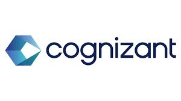
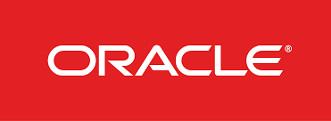
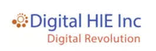

The bridge: Electronics gave me physical systems thinking. Software gave me scale. The intersection — bridging hardware constraints with cloud infrastructure — is where I do my best work.
02 · Career Trajectory
From mainframes to microservices



Company
Role
What I Did
Cognizant / Lincoln Financial
Project Lead
Migrated Federal Insurance from IBM Mainframe & S2K to ETL pipelines. 4 teams, 3 time zones, COVID. Delivered in 6 months.
Digital HIE Inc
Technical Lead
Led DirectTrust HISP accreditation from zero. HIPAA compliance, platform architecture, encryption, interoperability. 4 months.
Capital One
Systems Architect
Redesigned Transaction & Account Stores for 130M+ accounts. Monolith to serverless on AWS. Terraform, Go, DynamoDB.
Pattern: Take ownership of hard problems early, deliver under pressure, build systems others adopt.
03 · Technical Interests
Where hardware meets scalable software
Architecture & System Design — distributed systems at enterprise scale
Multi-Cloud Tenancies — bare metal + cloud provider infrastructure
Bridging Physical Systems with scalable software layers
Cryptography & Hashing — security at the protocol level
Why Amperesand: Solid-state transformers bridging physical power systems with intelligent software. That hardware-software intersection is exactly where I've built my career.
IaaS Architecture
☍
Data Center
⎓
Virtualization
⚒
Servers
☰
Storage
⇄
Networking
⚿
Security
Technical Presentation
Capital One: Monolith to Microservices
Redesigning Transaction & Account Stores for 130M+ accounts across Card, Bank, Auto, and Global Finance.
One monolith. Four lines of business. It couldn't scale.
Capital One's Transaction and Account systems ran as a single monolithic application. Card, Bank, Auto, and Global Finance shared the same codebase, database, and deployment pipeline.
Changes to one LOB risked breaking another. Deployments were slow. Performance bottlenecks cascaded everywhere.
Split the monolith into individual services with shared libraries and reusable APIs. Deploy on AWS. Without disrupting 130M+ accounts.
Before vs After
Before
After
Monolith Single app, all LOBs
Card Service Independent
Shared DB One schema
Bank Service Own model
Coupled Change one, risk all
Auto Service Isolated
Bottleneck Cascading
Global Finance Scales alone
▮
Payments • Accounts • Transactions
↓
▣
Shared Libs
⇄
Reusable APIs
☁
AWS Cloud
05 · Methodology
Product requirements drive every decision
Step
What We Did
Decision
01 — Requirements
Mapped every account type and transaction flow. Stakeholders: Product Owners, Vendors, Architects.
Account ID & Transaction ID schema
02 — Schema
Designed with room for future changes without breaking migration.
Flexible document model
03 — Database
SQL vs NoSQL against current and future scale. Millions of concurrent ops.
NoSQL — DynamoDB
04 — Language
Selected for 15+ year horizon, performance, concurrency.
Go
05 — Cloud
Containers (k8s) vs serverless against cost and ops complexity.
Serverless — Lambda
Key insight: The default approach is containers + Kubernetes. We challenged that — serverless was more cost-effective at this scale and eliminated operational overhead.
Source code in Go, stored in GitHub. Jenkins builds binaries, pushes to JFrog, deploys to all lines of business.
</>
Go Source
→
⬣
GitHub
→
↻
Jenkins CI/CD
↓
☑
JFrog Artifactory
↓
λ
Lambda Card
λ
Lambda Bank
λ
Lambda Auto
λ
Lambda Global
Testing Coverage
Type
Coverage
Detail
Sonar
98%
Full codebase
Unit
100%
Business logic, components independently
Integration
BDD
Gherkin scenarios — API, AWS, DynamoDB layers
Performance
1B+ records
Apache JMeter load testing
BDD in practice: Integration tests used Gherkin-based scenarios mirroring real-world workflows and acceptance criteria through behavior-driven development.
08 · Finalized Solution
NoSQL + Go + Serverless. Purpose-built for scale.
◆
Core Services
↓↓↓↓
☉
Bank Transactions
☉
Card Transactions
☉
Auto Account Txns
☉
Global Transactions
NoSQLDynamoDBGoLambdaTerraformMulti-Region
Business use cases decide the entire tech stack
Schema designed with room for future changes
DynamoDB + Go — ideal and cost-effective at scale
1,000+ concurrent Lambdas handling millions of records
Challenge existing designs. Let the product decide.
130M+
Accounts
8 mo
Delivered
4
Services
98%
Coverage
Product requirements define architecture. Schema → DB → Cloud → Language. Every decision traces back.
Challenge inherited designs. We moved from the default k8s path to serverless. Saved cost and complexity.
Root-cause analysis over gut. Account volumes and growth projections were the foundation.
Ripple effect. Other teams adopted the new patterns, including end-of-day batch processing.
Built Terraform from scratch enabling automated cross-region failover us-east-1 to us-west-2. Designed "code-once" architecture adopted across four services on multiple AWS accounts.
10 · Personal Insights
A few things beyond the code
Sports
Volleyball, Cricket, Badminton. Compete whenever I can. Team sports taught me more about coordination than any standup meeting.
Driving
Love driving through Manhattan and Jersey City. The traffic isn't relaxing, but the energy is.
Languages
English, Telugu, Tamil, Hindi, Kannada — 4+ languages. Working across global teams and time zones has always felt natural.
Exploring
New cuisines, new places. Curiosity doesn't stop when I close the laptop.
Q&A
Ok, shoot.
Happy to go deeper on any technical decisions, trade-offs, challenges, or lessons learned.